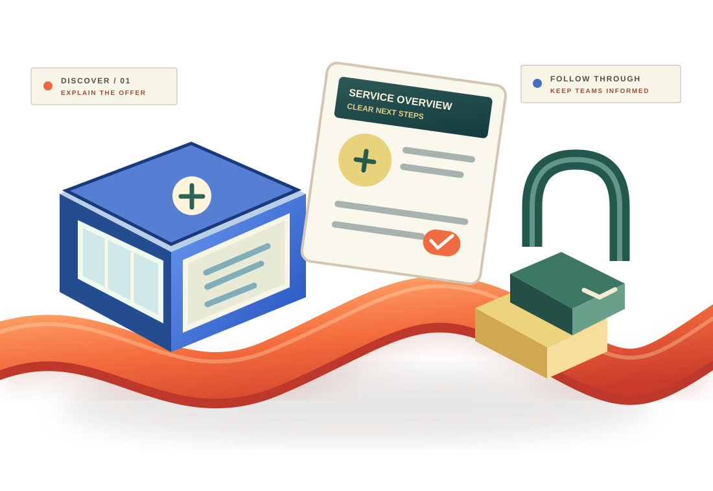

01 / DISCOVERY
Useful services.
Hard to compare.
Customers and business prospects need understandable product information and transparent routes to authorised teams.
INDUSTRY 07 / FINANCIAL SERVICES BUSINESSES
Financial-services organisations need more than attention. Make public information easier to navigate, general enquiries more purposeful and internal business handovers more connected.
DISCOVER → UNDERSTAND → ENQUIRE → FOLLOW THROUGH

CONCEPTUAL BUSINESS ART / NOT A REAL BANKING PRODUCT OR SECURITY CERTIFICATION
01 / WHERE THE EXPERIENCE GETS COMPLEX
Important financial decisions deserve clear communication. Public-facing information and everyday non-transactional business workflows can still be confusing or fragmented.
Customers and business prospects need understandable product information and transparent routes to authorised teams.
General enquiries can stall without a clear owner, accurate information or agreed follow-up process.
Marketing, sales and operations benefit when routine non-sensitive next steps stay visible.
02 / PUBLIC INFORMATION TO RESPONSIBLE FOLLOW-UP
A fictional dimensional business-communication pavilion traces a non-transactional path through public descriptions, clearer context, general enquiries and team handovers. This is not a real bank, regulated system, financial product, security certification, account, transaction or client project.
Scroll down to reveal each conceptual business stage · Scroll upward to reverse · Select a stage with the accessible controls below.
Organise public-facing service descriptions and direct visitors toward an appropriate official information source.
DISCOVERY / GENERAL PUBLIC INFORMATIONExplain service categories and general eligibility disclosures clearly, without offering product recommendations or financial advice.
PUBLIC CLARITY / NOT AN ELIGIBILITY DECISIONConnect non-sensitive general business questions to authorised teams without collecting banking, identity or transaction information.
GENERAL ENQUIRIES / NO ACCOUNT DATAClarify ownership between marketing and operations teams while all regulated activities stay with appropriately authorised providers.
BUSINESS COORDINATION / NO REGULATED PROCESSING02 / A CONNECTED BUSINESS CONVERSATION
Explore an illustrative, non-transactional customer journey. It does not process accounts, verify identities, assess eligibility, move money or make financial decisions.
PUBLIC INFORMATION / DISCOVERY
Share accurate, public-facing information about your approved services and direct people to the appropriate official channels.
03 / BUSINESS GROWTH & OPERATIONS
Taamerat360 supports general business communication and operational planning. Regulated financial services, secure banking integrations and compliance certification are not implied.
Help relevant audiences discover accurate information about approved services.
Explore packageOrganise non-sensitive enquiries and business follow-up responsibilities.
Explore packageKeep marketing and business teams aligned around routine processes.
Explore packageConnect public information, enquiries and business coordination.
Explore package04 / EVIDENCE FIRST
Approved organisation names, business examples, verified outcomes and testimonials will appear here when the client authorises them. We will not invent customers, security certifications, regulatory licences or performance results.
Explore your business priorities[Verified business challenge, approved scope and substantiated outcomes]
05 / DEFINE AN APPROPRIATE STARTING POINT
Choose three general, non-sensitive options to create a discussion brief. Do not enter bank account details, credentials, identification numbers, transaction records or customer information.
Select your organisation type and priorities to create a copyable discussion brief.
No banking or personal data is requested or transmitted by this tool.
06 / CLEAR BOUNDARIES
Discuss business needs without confusing them with regulated financial services or claims of compliance approval.
No. This page concerns general marketing, public communication and business operations. It does not provide investment advice, banking services, lending decisions, payments, transaction processing or financial recommendations.
No. Only fixed business categories are available. Never submit credentials, card numbers, bank accounts, identification documents, customer records or transaction data through this brief or an unverified contact channel.
Only after separate discovery, legal and compliance assessment, security review, explicit scope approval and applicable regulatory checks. No integration, security certification or regulatory suitability is promised by this demonstration.
BANKING & FINTECH / NEXT STEPS
Identify one non-sensitive business communication challenge, then agree on a sensible scope and next step.
Discuss a business project